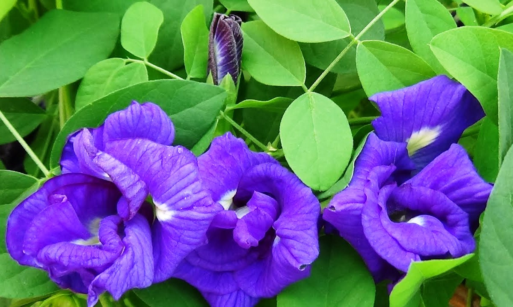

Basonym of Drug
Aparajita
Main Synonym
- Aasfota
- Girikarni
- Vishnukranta
- Sweta
- Mahasweta
Regional Name
- Bengali: Aparajita
- Gujarati: Garani, Koyal Ni Vel
- Hindi: Koyal, Kalijar
- Kannada: Girikarnike, Sankhpushpa
- Tamil: Kakkanakoti
- Telugu: Ditena
- English: Winged Leaved Clitoria / Butterfly Pea Flower
Botanical Name
Clitoria ternatea Linn.
Family
Fabaceae
Classification (Gana)
- Acharya Charaka: Shirovirechanopaga Gana
External Morphology
50-70 cm long creeper or vine
Useful Parts
Important Phytoconstituents
- Starch
- Mome Inositol
- Cyclohexen
- Acetic Acid
- Hirsutene
Rasa Panchak
- Rasa: Tikta, Katu, Kashaya
- Guna: Laghu, Ruksha
- Virya: Shita
- Vipaka: Katu
- Prabhava: Medhya
Action
Tridoshahara
Therapeutic Indications
- Vedana Sthapana (Pain Reliever)
- Mutrala (Diuretic)
- Bhedana (Purgative)
- Medhya (Improve Cognitive Power)
Therapeutic Uses
- Jalodara: As purgation (virechana) in ascites.
- Mutrakruchha: Root bark phant (steeped decoction) is useful in burning micturition.
- Swasa-Kasa: Roasted seed with milk is beneficial in children's cough and cold (it reduces cough by purgation).
Dose
- Root Bark Powder: 1.5 to 3 gm
- Seed Powder: 1 to 2 gm
Formulations
Garbhapal Ras, Vatraktantak Ras
Adverse Effect
Not Known